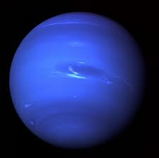

Neptune is the eighth and farthest known planet from the Sun. It is an ice giant composed mainly of hydrogen, helium, and methane, with a deep blue color caused by methane absorbing red light in its atmosphere. Neptune is a highly dynamic planet with extremely strong winds and violent storms. It holds the record for the fastest wind speeds in the Solar System, reaching up to 2,000 km/h or more. These winds create massive storm systems similar to Jupiter’s Great Red Spot, but they appear and disappear more frequently. Despite receiving very little sunlight due to its distance from the Sun, Neptune has an active and energetic atmosphere. This internal heat likely drives its weather systems, making it far more active than expected for a planet so far away. Neptune also has a faint ring system and 14 known moons, with Triton being the largest. Triton is unusual because it orbits Neptune in the opposite direction of the planet’s rotation, suggesting it was likely a captured object from the Kuiper Belt.